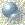

YETER 2002
PROGRAMLAR
YETER 2002
PROGRAMLAR 
|
|
Antivirüs
Dini Programlar
Gerekli Programlar
Internet
Masaüstü
Medya Sihirbazları
Resim Düzenleyiciler
Sözlükler

En
gerekli ve genellikle hepsi de Freware (Bedava Kullanım) özelliğine sahip
yüzlerce program... Programlar, Yeter.html sayfaları üzerinden direkt kurulup
çalıştırılacağı gibi bizzat kendi dosyalarında bulunan ......kur.exe
programlarından da kurulabilir ve çalıştırılabilir. Eğer programların bir kısmı
çalışmazsa bu bilgisayarın, donanım ve özelliklerinin farklı olmasından
kaynaklanabilir. Kurulan programlar, bilgisayardan tamamen kaldırılmak
istenildiğinde, denetim masası altındaki "ekle kaldır" programı
bulunarak kaldırılabilir.
Bilgisayar programlarına ulaşmada ve
programları kurmadaki zorluk sebebiyle bu programlar, itinayla seçilmiş, cd
içine yerleştirilip orjinal şekilde hazırlanmış ve ticari gaye güdülmemiştir.
Bu programların bilgisayarı olan herkesin yanında mutlaka bulunması gerektiğini
düşünüyorum. Bu halisane hizmetim sayesinde, bilgisayar kullanımında zorluk
çeken arkadaşlarıma en azından küçücük bir yardımım dokunabilmişse ne mutlu
bana!
Gayret kuldan, tevfik Allah'tandır. Şimdiden hepinize hayırlı çalışmalar....

} //-->